Cloudflare Data Logpush
2016 - 2019
As a part of the Data product team, one of the projects we worked on was Data Logpush. For many customers of Cloudflare, theres a lot of data that is collected via web traffic
passing through Cloudflare's network. Customers can use this data to better understand traffic pattern, audience behaviors, and even better protect their sites from DDoS
(Distributed Denial of Service) attacks from malicious sources.
Logpush allows this data to be push directly from Cloudflare to the customer's own data store. What's
important here is to create and maintain a link from Cloudflare to the external data store by getting access and maintaining a secure connection.
back to the top
back to portfolio
01. Problem
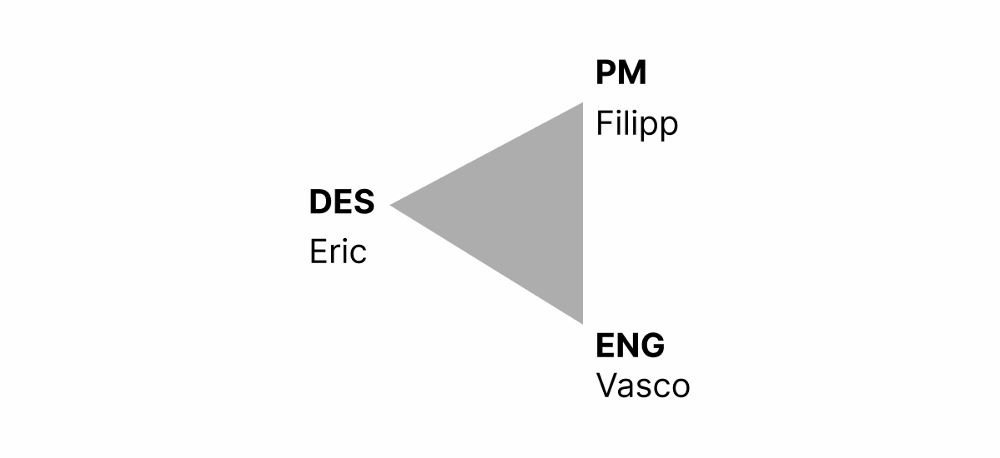On the data product team, we work closely between product, design, and engineering. Our team has been working on many projects up to this point such as the analytics app and data storage.
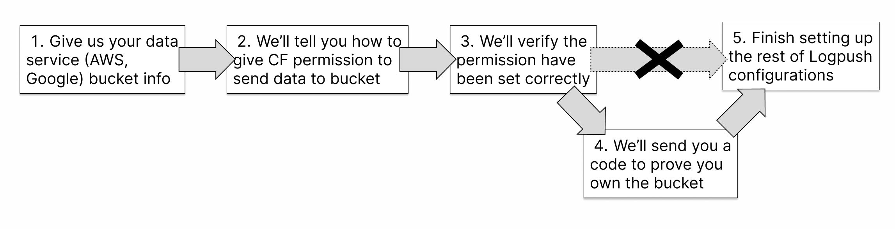One of the early feedback we got was that we had to add in an extra step inbetween to set up a confirmation that the user who was linking the data store is an owner of that data store. We wanted to prevent a user from linking a data store that they didn't own but knew/guessed the name of.
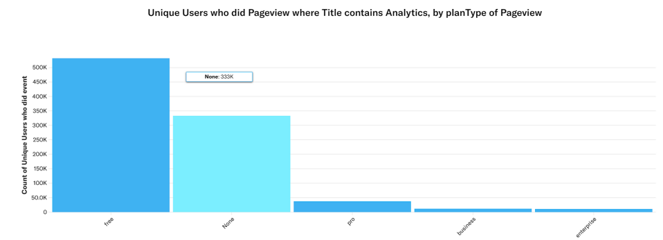
A good amount of traffic on the Cloudflare Analytics and Data app page were internal team support engineers that have been dealing with a lot
of the data requests manually. So much so that internal traffic was the 2nd highest category of traffic just after free users.
If our logpush feature was successful, we would able to allow Pro and Ent users to self-sever data access and reduce load on the support teams while giving
more autonomy to the customer to get their data.
03. Design
We created this design to be a linear step-by-step process to guide the user through setting up logpush.
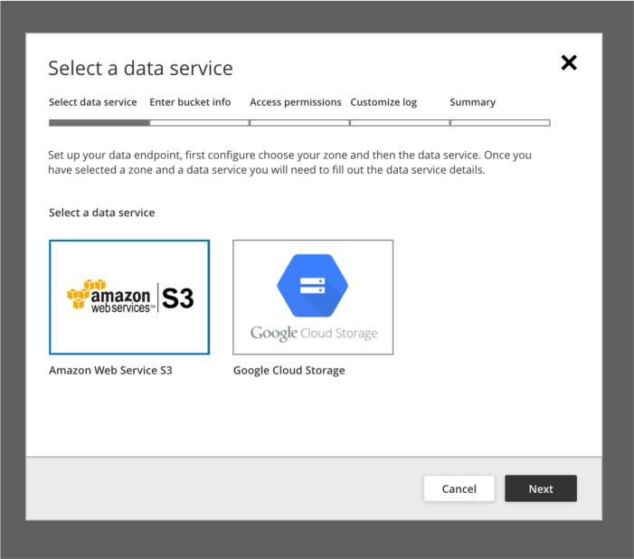Step 1: The user would select from a list of different data stores that was supported for logpush.
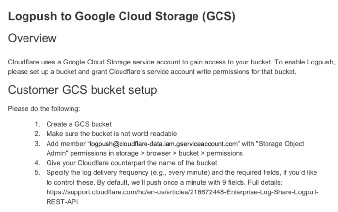Step 2a: If the user selected Google Cloud Storage, there would be a set of instructions they had to do in the GCS app to allow for 3rd party access.
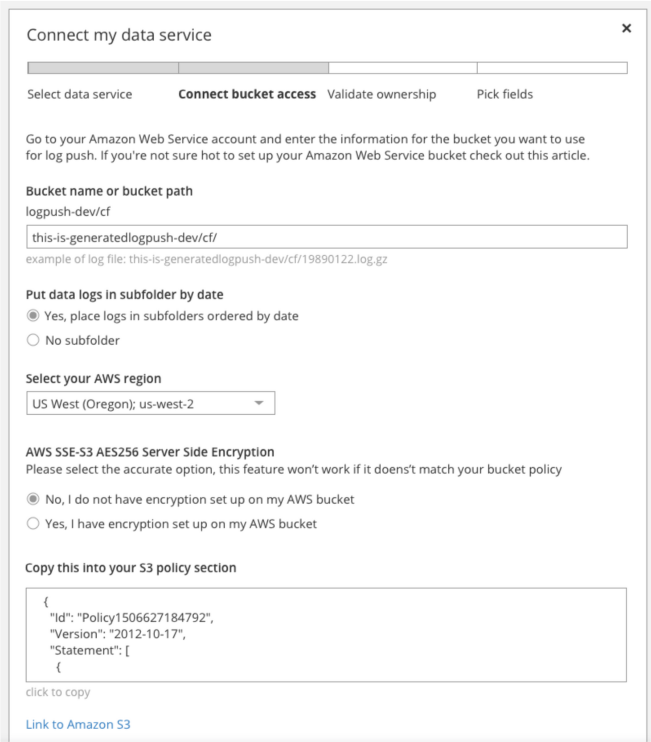Step 2b: Similarily, for AWS there would be some forms that needed to be filled out.
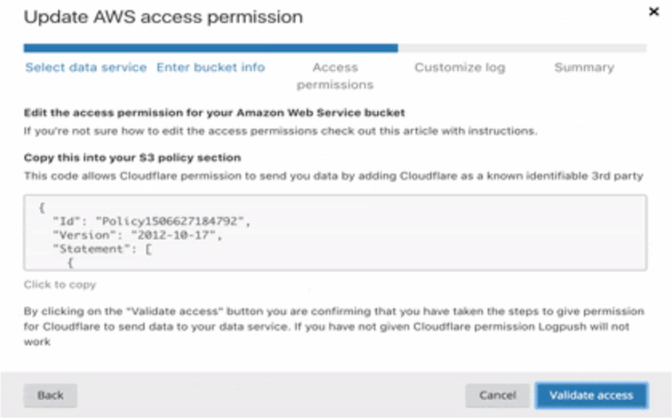
Step 3: The next step was important. To prove that you were the owner of the data store, we wanted you to add in a file
that we could read and confirm that you were the owner.
We create this step to be unique to each of the services that we supported to give specific and
clear instructions to the customer. With a convenient click-to-copy section, it was easy for the customer to grab the code snippit without downloading an additional file.
Step 4: In this step, we had a multi-select that allowed the user to choose the conditions on which logpush would send data over. Just turning on full access
to the data might overwhelm the data store and end up with a lot of noise to signal.
Therefore by allowing specific conditions for when to send the data to a specific folder, the user can better group and organize the relevant data. We turned all the possible options from the possible server into organized
groups that can be fully selected or partially selected.
Here is a short clip of the logpush set up flow from start to finish.
04. Testing
It was important for us to confirm though testing how our design and implementation fared with our internal stakeholders and customers.
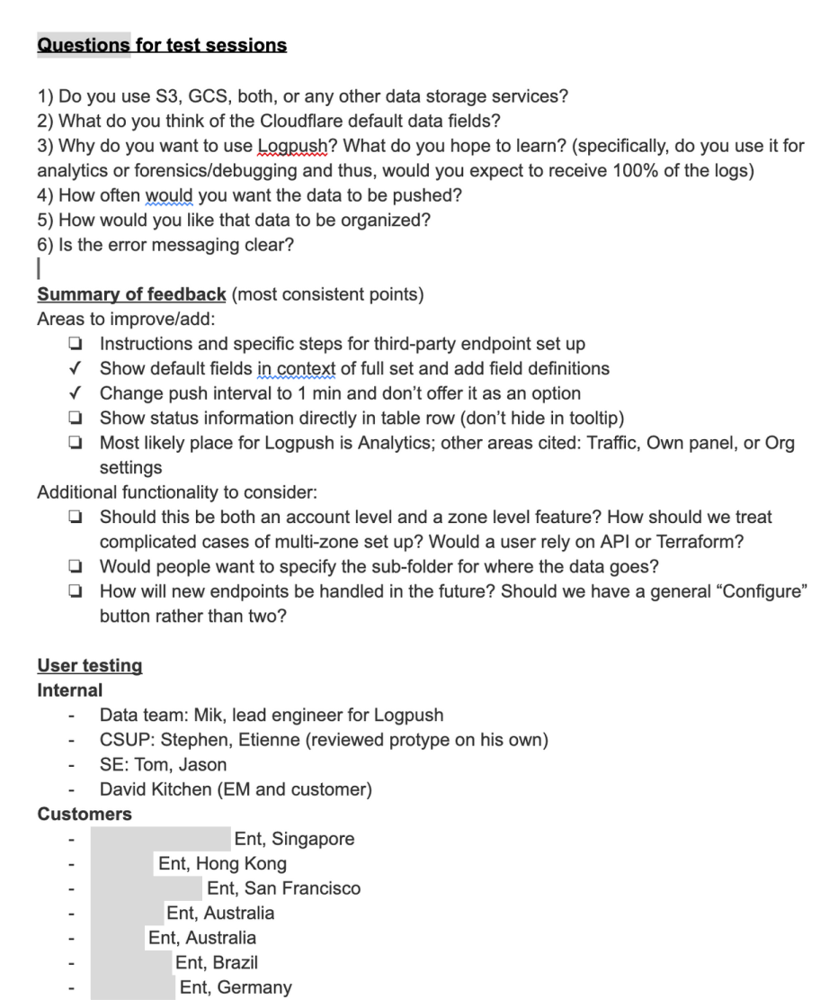We worked on setting up questions to understand the background of our customers, if they would use Logpush, and how they currently accessed this data.
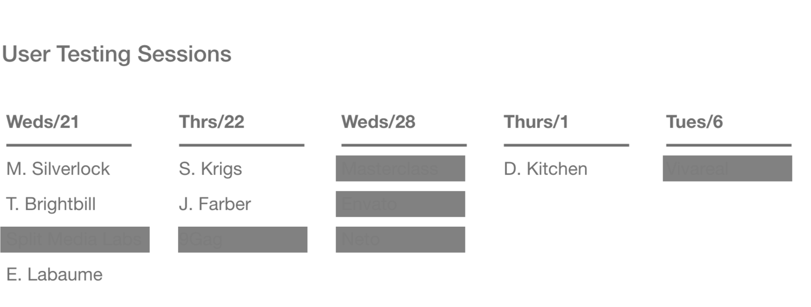
We had set up 12 sessions to review the prototype with our sales and support engineers and customers.
*The customer names have been redacted from this schedule.
During the user testing, we also walked the customer through the prototype. We allowed them to drive where neccessary so that we can see how they might react to the design if they were implementing it without observers. This allowed us to see where they might get stuck and which parts of the design we can futher refine.
05. Results
We were able to design, build, test, and launch this product within the set timelines for an April 2019 launch.
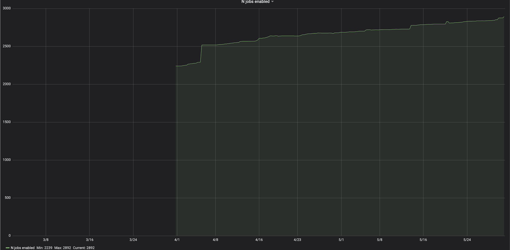From 2 months from launch, we had established a steady rate of aproximately just under 3000 daily logpush jobs.
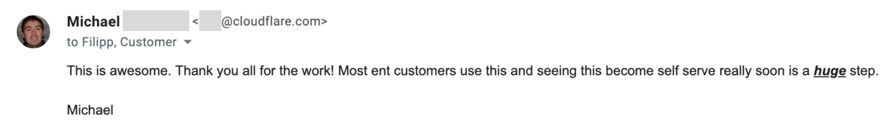And a lot of positive feedback from our sales and support engineers. Overall, we were able to reduce dependancy on our sales and support enginers while allowing customers to have better control and access to their data.